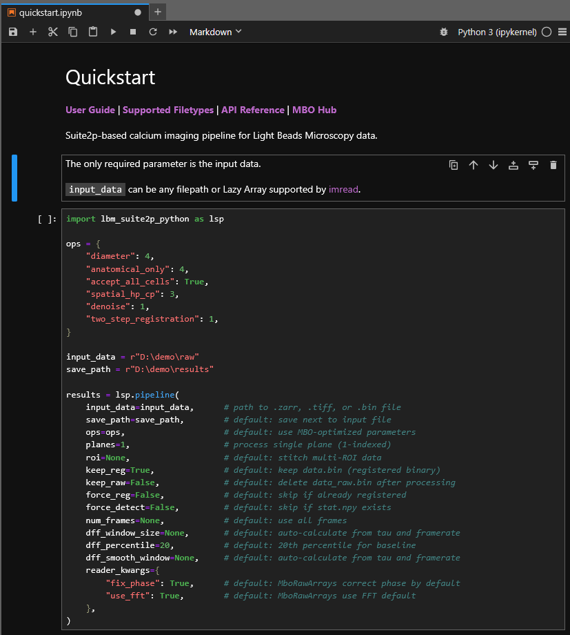

Command Line Interface#
The mbo command provides tools for viewing, converting, and analyzing imaging data.
Command |
Description |
|---|---|
|
Launch GUI with file dialog |
|
Convert between formats |
|
Show array info |
|
Create starter notebooks |
|
List supported formats |
|
Create a desktop icon |
|
Show render/compute GPU and memory |
GUI Mode#
mbo # file dialog
mbo /path/to/data # open specific file
mbo /path/to/data --metadata # show only metadata
{kind=link}
{kind=link}
Convert#
Convert between formats, optionally selecting planes/timepoints and applying phase correction.
mbo convert /data/raw output/ -e .zarr # tiff to zarr
mbo convert /data/raw output/ -e .bin # tiff to suite2p binary
mbo convert /data/volume.zarr output/ -e .tiff # zarr to tiff
mbo convert /data/raw output/ -p 1 -p 7 # specific planes (repeat -p)
mbo convert /data/raw output/ -t 1 -t 50 # specific timepoints (repeat -t)
mbo convert /data/raw output/ -c 1 -c 2 # specific channels (repeat -c)
mbo convert /data/raw output/ --num-timepoints 500 # first 500 timepoints
mbo convert /data/raw output/ --roi 0 # split ROIs into roiNN/ subdirs
mbo convert /data/raw output/ -e .zarr --compressor zstd --pyramid # compressed pyramid
mbo convert /data/raw output/ --fix-phase # with phase correction
Option |
Description |
|---|---|
|
Output format: |
|
Z-plane to export (1-based); repeat for multiple: |
|
Timepoint to export (1-based); repeat for multiple: |
|
Color channel to export (1-based); repeat for multiple: |
|
Export first N timepoints |
|
Export first N z-planes |
|
ROI: |
|
Bidirectional phase correction |
|
Replace existing files |
All Convert Options
Option |
Description |
|---|---|
|
Output filename (binary format) |
|
Suffix appended to output filenames |
|
Reorder planes before writing (0-based indices into |
|
|
|
HDF5 dataset name ( |
|
Z-plane registration (Suite3D) |
|
register-z: subsample frame count (default 200) |
|
register-z: streaming batch size (default 10) |
|
register-z: search radius in pixels (default 30) |
|
|
|
Phase correction: border pixels excluded from estimation |
|
Phase correction: max pixel offset to search |
|
Phase correction: FFT-based 2D correction |
|
OME-zarr metadata (zarr only, default on) |
|
Zarr codec: |
|
Zarr compression level (zarr only) |
|
Zarr v3 sharding (zarr only) |
|
Write multiscale pyramid (zarr only) |
|
Max pyramid resolution levels (zarr only, default 4) |
|
Pyramid downsampling: |
|
Streaming chunk size in MB (default: 100) |
|
Deprecated alias for |
|
Verbose logging |
Output is named from the timepoint, channel, and plane ranges.
$ mbo convert E:/demo/mk355/raw E:/demo/mk355/convert --num-timepoints 500 -p 4
Reading: E:/demo/mk355/raw
Shape: (1574, 1, 14, 550, 448), dtype: int16
Writing: E:/demo/mk355/convert (format: .tiff)
Writing TIFF: 100%|███████████████████████████████| 500/500 [00:01<00:00, 394.76pg/s]
Done! Output saved to: E:/demo/mk355/convert/tp00001-00500_ch01_zplane04.tif
Note:
-e/--extneeds the leading dot:.zarr, notzarr.-p/--planes,-t/--timepoints, and-c/--channelsare repeatable; pass each value separately (-p 4 -p 5), not4 5or4,5,6.-t/--timepointsselects specific timepoints;--num-timepointslimits to the first N. (-n/--num-framesis a deprecated alias for--num-timepoints.)--roi 0(split) and--roi "1,3"(multiple) write each ROI to its ownroiNN/subdirectory.--roi Nselects one ROI; omitting--roistitches all ROIs into one FOV.Zarr-only options (
--compressor,--compression-level,--sharded,--pyramid*) are ignored for other formats.--dataset-nameapplies to.h5only.
Info#
Display shape, dtype, imaging metadata, and any Suite2p results found alongside the data. Nothing is loaded into memory.
mbo info /data/raw.tiff
mbo info /data/volume.zarr
mbo info /data/suite2p/plane0
mbo info /data/raw --all # also dump the full raw metadata dict
$ mbo info E:/demo/mk301/raw
Loading: E:/demo/mk301/raw
E:/demo/mk301/raw
Type LBMArray
Shape (500, 1, 14, 448, 448) [T, C, Z, Y, X]
Dtype int16
Imaging
Frame rate 17.07 Hz
Pixel size 2 x 2 um
Frame size 448 x 448 px (Y x X)
FOV 896 x 896 um
Acquisition
Stack type lbm
Timepoints 500
Z-planes 14
Color channels 1
mROIs 2
Duration 29.3 s
Value range [-324, 4511]
Files (2)
- mk301_03_01_2025_2roi_..._00000.tif
- mk301_03_01_2025_2roi_..._00001.tif
Results
none found
Option |
Description |
|---|---|
|
Also dump the full raw metadata dict |
|
Skip imaging/acquisition sections |
Init#
Create starter notebooks (mbo + LBM-Suite2p user guides).
mbo init # notebooks in current directory
mbo init /path/to/raw # notebooks in /path/to/scripts, data path filled in
mbo init /path/to/raw -o ./nb # custom destination directory
Option |
Description |
|---|---|
|
Destination directory (overrides default location) |
|
Overwrite existing notebooks |
With a DATA_PATH argument, notebooks are written to a scripts/ directory beside the data and the data path is pre-filled. Without it, notebooks go in the current directory with default paths.
{kind=link}

Shortcut#
Create a desktop icon that opens the GUI.
mbo shortcut # "Miller Brain Studio"
mbo shortcut --name "MBO" # custom name
Created: C:/Users/RBO/Desktop/MBO.lnk
Windows creates a .lnk (no console window); Linux creates a .desktop entry.
GPU#
Show which GPU renders the viewer and which runs compute (suite2p / cellpose / cupy), plus device memory.
mbo gpu # render GPU, compute GPU, device memory
mbo gpu --processes # also per-process VRAM
mbo gpu --watch 2 # refresh every 2s
mbo gpu --json # machine-readable
Render GPU (fastplotlib): NVIDIA RTX A4000 (DiscreteGPU) via Vulkan (wgpu default)
Compute GPU (suite2p/cellpose/cupy): NVIDIA RTX A4000 (cuda:0)
Device memory:
GPU 0: NVIDIA RTX A4000 - 941/16376 MB used (6%), 15229 MB free, util 3%, 35C
Utilities#
mbo --check-install # verify installation and GPU config
mbo_utilities v3.2.0 | Python 3.12.9
==================================================
CUDA Environment:
Driver CUDA: 12.6
GPU: NVIDIA RTX A4000
Features:
[OK] PyTorch
[OK] CuPy
[ -] Suite2p (not installed)
[ -] Suite3D (not installed)
[ -] Rastermap (not installed)
Installation OK
Formats#
mbo formats
Input: .tif, .tiff, .zarr, .bin, .h5, .hdf5, .npy, .json
Output: .tiff, .zarr, .bin, .h5, .npy
Upgrade#
Method |
Command |
|---|---|
Install script |
Re-run install script |
CLI only |
|
Virtual env |
|